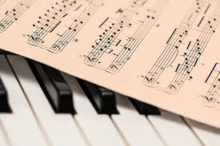

La música (del griego: μουσική [τέχνη] - mousikē [téchnē], «el arte de las musas») es, según la definición tradicional del término, el arte de organizar sensible y lógicamente una combinación coherente de sonidos y silencios respetando los principios fundamentales de la melodía, la armonía y el ritmo, mediante la intervención de complejos procesos psicoanímicos. El concepto de música ha ido evolucionando desde su origen en la Antigua Grecia, en que se reunía sin distinción a la poesía, la música y la danza como arte unitario. Desde hace varias décadas se ha vuelto más compleja la definición de qué es y qué no es la música, ya que destacados compositores, en el marco de diversas experiencias artísticas fronterizas, han realizado obras que, si bien podrían considerarse musicales, expanden los límites de la definición de este arte.
La música, como toda manifestación artística, es un producto cultural con múltiples finalidades, entre otras, la de suscitar una experiencia estética en el oyente, la de expresar sentimientos, emociones, circunstancias, pensamientos o ideas, y cada vez más, cumplir una importante función terapéutica a través de la musicoterapia.
La música además, cumple una función de vital importancia en el desarrollo cognitivo del ser humano. Colabora con el pensamiento lógico matemático, la adquisición del lenguaje, el desarrollo psicomotriz, las relaciones interpersonales , el aprendizaje de lenguas no nativas y a potenciar la inteligencia emocional entre otros. Por este motivo, la música debe estar presente en cualquier plan educativo ministerial moderno y reconocida como una disciplina imprescindible dentro de la enseñanza obligatoria.
Una definición bastante amplia determina que música es sonoridad organizada (según una formulación perceptible, coherente y significativa). Esta definición parte de que en aquello a lo que consensualmente se puede denominar "música"— se pueden percibir ciertos patrones del "flujo sonoro" en función de cómo las propiedades del sonido son aprendidas y procesadas por los humanos (hay incluso quienes consideran que también por los animales).
La música contiene dos elementos: el material acústico y la idea intelectual. Ambos no se hallan yuxtapuestos como forma y contenido, sino que se combinan, en la música, para formar una imagen unitaria. Para convertirse en vehículo de la idea intelectual, el material acústico experimenta una preparación pre-musical, mediante un proceso de selección y ordenamiento